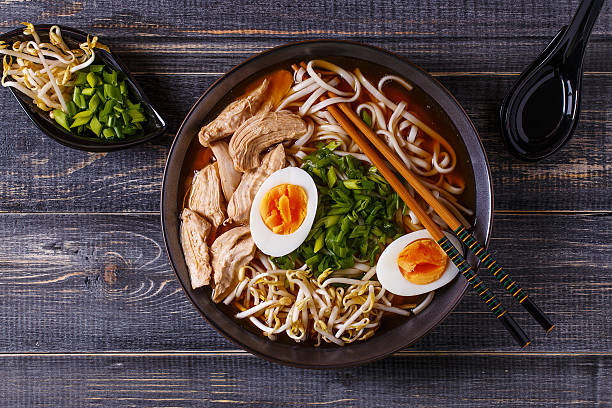

Les ramen sont un plat de nouilles japonaises servies dans un bouillon, généralement accompagnées de viande, de légumes et d'autres ingrédients délicieux.
Les ramen sont originaires de Chine mais sont devenus extrêmement populaires au Japon. Ils sont devenus un aliment de base de la cuisine japonaise.
Les ingrédients des ramen varient, mais les composants de base comprennent des nouilles, un bouillon savoureux, du porc, des œufs, des algues et des oignons verts.
Il existe de nombreux types de ramen, y compris le shoyu (sauce soja), le miso (pâte de soja), le shio (sel) et le tonkotsu (bouillon de porc).
Les ramen sont un régal pour les papilles gustatives et une expérience culinaire incontournable lors d'une visite au Japon !